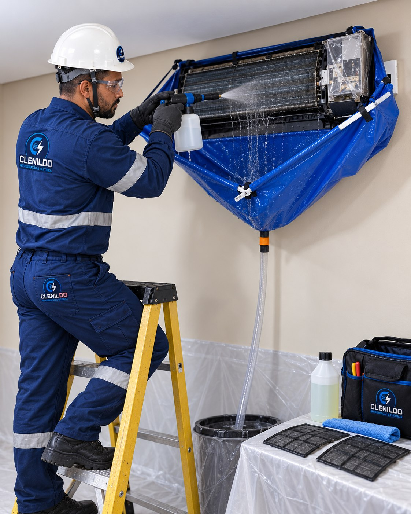

Limpeza técnica
Limpeza de Ar-Condicionado
Remoção cuidadosa da sujeira acumulada para conservar o equipamento e manter seu funcionamento eficiente.
Solicitar orçamento
Equipamento limpo, ambiente mais confortável.
Utilizamos proteção para paredes, móveis e piso durante a limpeza da unidade interna.
O procedimento ajuda a conservar componentes e reduzir acúmulos que prejudicam o desempenho.